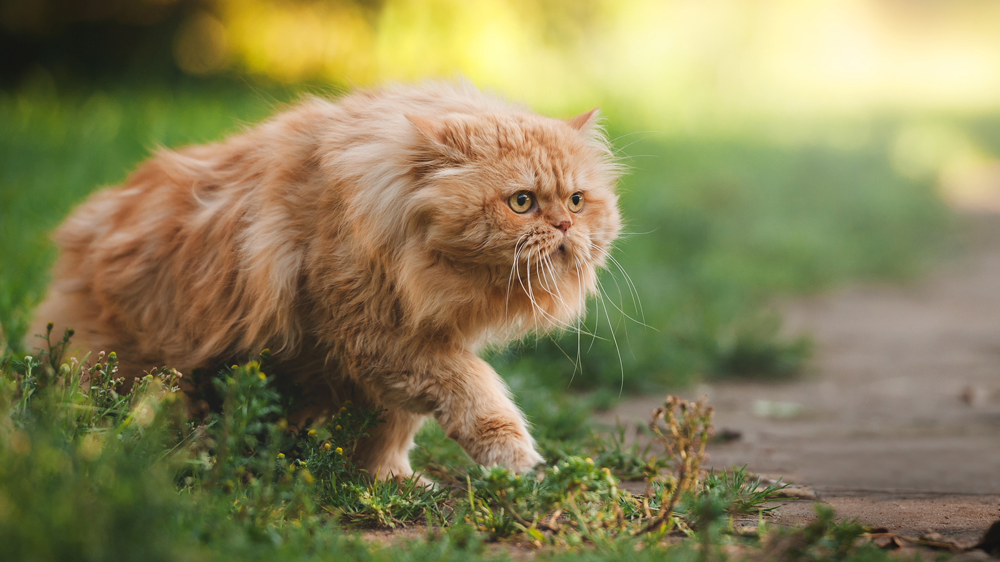
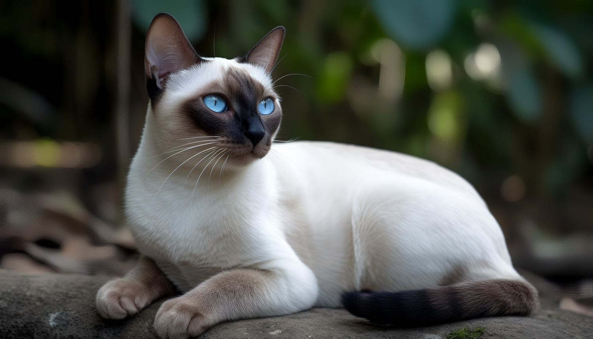
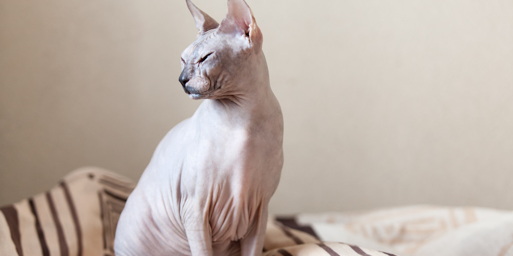

Kot perski to jedna z najbardziej rozpoznawalnych ras kotów, znana ze swojego eleganckiego wyglądu i spokojnego temperamentu. Charakteryzuje się kręconym nosem, dużymi, wyrazistymi oczami i bujną sierścią, co nadaje mu wyjątkowy, majestatyczny wygląd. Pochodzi z Persji (obecnie Iranu), a jego historia sięga setek lat. Persy są znane z łagodnego charakteru, są towarzyskie i oddanne swoim opiekunom. Potrafią dostosować się do życia w domu, uwielbiając komfort i spokój. Ze względu na długą sierść wymagają regularnej pielęgnacji, aby utrzymać ją w doskonałym stanie. Są to koty, które cenią spokojne otoczenie, a ich przywiązanie do właściciela sprawia, że stają się wspaniałymi towarzyszami dla osób poszukujących spokojnego, pięknego kota.

Kot syjamski to rasa o wyrazistym charakterze i eleganckim wyglądzie. Pochodzą z Tajlandii, gdzie były cenione za swoją inteligencję i przywiązanie do ludzi. Charakteryzują się wyróżumaszczeniem, gdzie ciało jest jaśniejsze, a uszy, nos, łapy i ogon mają ciemniejszy kolor. Mają duże, niebieskie oczy, które dodają im wyrazistego spojrzenia. Syjamskie koty są znane ze swojego ekspresywnego zachowania, często komunikują się za pomocą specyficznego miauczenia. Są towarzyskie i przywiązane do swoich opiekunów, potrzebują bliskości i uwagi. Ze względu na swoją ciekawość są również aktywne i zabawne. Kocięta syjamskie rodzą się białe, a ich umaszczenie stopniowo się rozwija. To inteligentne i pełne energii koty, które stanowią wspaniałych towarzyszy dla aktywnych domów.

Kot sfinks, znany ze swojej charakterystycznej nagości, jest jednym z najbardziej rozpoznawalnych ras kotów. Choć wydaje się delikatny, to w rzeczywistości ma gładką, jedwabistą skórę, z drobnymi włosami, co nadaje mu unikalny wygląd. Początki tej rasy sięgają lat 60. XX wieku, a ich nazwa nawiązuje do starożytnych egipskich posągów sfinksów. Pomimo braku okrywy włosowej, sfinks nie jest zimny, a jego ciepłe, miękkie ciało sprawia, że są to koty przyjemne w kontakcie. Mają wyraziste uszy, duże oczy i charakteryzują się inteligencją oraz energią. Sfinksy są towarzyskie, uwielbiają bliskość z opiekunami i często okazują się doskonałymi kotami do przytulania. Ze względu na specyficzny wygląd i niezwykłą osobowość, koty sfinksy zdobywają serca wielu miłośników kotów na całym świecie.